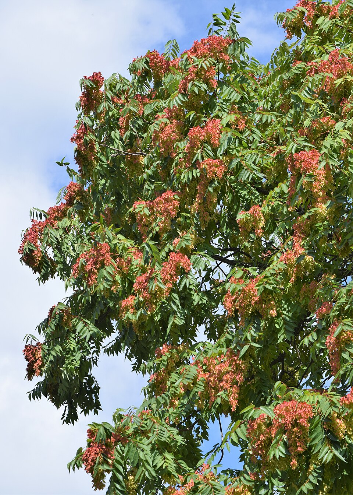

Log Tree of Heaven sightings across states, watch where it's most concentrated, and track treatment progress over a five-year window.
⏰ Heads up: this page can't send you a notification on its own after five years — browsers don't allow that. Set a calendar reminder for your five-year check-in date; all the data here will be waiting and ready when you open it again.
🔍 Why we're measuring
Tree of Heaven is an invasive species that spreads fast. Tracking where it's most concentrated across states
helps build a data-backed case for where treatment should be prioritized first.
🪪 How to identify Tree of Heaven
Before logging a sighting, confirm it's Tree of Heaven (Ailanthus altissima) —
not look-alikes like sumac, ash, or black walnut.
Huge compound leaves: one leaf can be 1–4 feet long with about 10–40 leaflets along a central stem.
Smooth leaflet edges: sides are mostly smooth (not sharply saw-toothed like sumac).
Glandular teeth at the base: look for 1–2 small bumps/teeth near where each leaflet attaches — a key ID clue.
Strong smell: crushed leaves or broken twigs often smell like burnt peanut butter or spoiled nuts.
Twisted winged seeds: female trees make clusters of flat, twisted samaras that often hang on into winter.
Bark: young bark is smooth and gray-brown; older bark can look a bit like cantaloupe skin.

Leaves: long compound leaves with many leaflets. Photo: Wikimedia Commons (Ailanthus altissima).
Checks your device's current location against everything logged so far, and tells you if any Tree of Heaven
has been recorded near you (within about 30 miles) or anywhere in your state.
🧪 Sample Data
This loads made-up example data — one entry per year for 5 years (2022–2026), for all 50 states —
so you can see how the charts and rankings look with a full dataset. It's simulated, not real field data,
so swap it out for your own measurements as you collect them.
📤 Share / Backup (CSV)
Export your logged sightings as a spreadsheet-friendly CSV file you can email to a teacher or teammate,
or open in Excel / Google Sheets. Import brings a CSV back into this browser (adds to existing data).
➕ New Sighting / Measurement
🗺️ Most Affected States
Top 10 states by total trees counted. Use the dropdown to check any other state.
📊 Average Height Over Time
🌱 Total Tree Count Over Time
Sum of all trees counted, across the states selected above, per year.
🚦 Treatment Status Breakdown by Year
Not treated vs. monitoring vs. cleared, as a share of total trees counted each year — for quick go/no-go decisions.
🚁 5-Year Treatment Forecast
Models your drone + Verticillium nonalfalfae fungus plan against the top 5 states with the most
Tree of Heaven, based on the most recent count logged for each state. Adjust the assumptions and re-run.